住宅 店舗 商業施設 （ブライダル） 商業施設 （メモリアル） その他 住宅 伊佐町の家２ 京都府京都市 リフォーム 木造在来工法、２階建て 五条坂の離れ 京都府京都市 新築 木造在来工法、平屋建て 北白川の家 京都府京都市 リフォーム 木造在来工法、２階建て 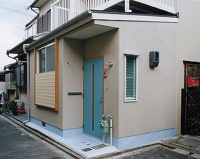 東石屋町の家 京都府京都市 リフォーム 木造在来工法、２階建て 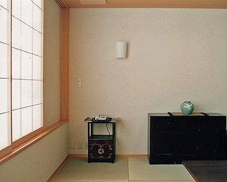 伊佐町の家１ 京都府京都市 リフォーム 木造在来工法、２階建て 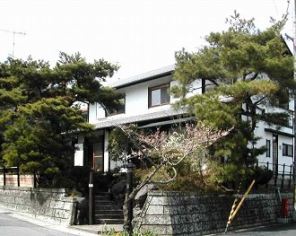 比叡平の家 滋賀県大津市 新築 木造在来工法、２階建て 店舗 京都ネーゼ 京都府京都市 内装：新築建物、スケルトン 飲食店（イタリア料理） ケーキ童夢 京都府京都市 内装：既存建物、リフォーム 飲食店（ケーキ販売＋飲食） 飲み処 胡ちょう 京都府京都市 内装：既存建物、リフォーム 飲食店（小料理＋飲み処） クラフトバザール椋 京都府京都市 内装 物品販売店（アジアン雑貨） 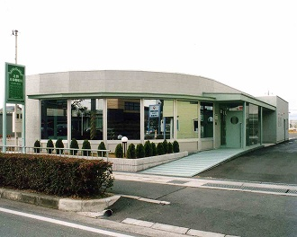 Ｋ耳鼻咽喉科 滋賀県守山市 新築 診療所（耳鼻咽喉科） 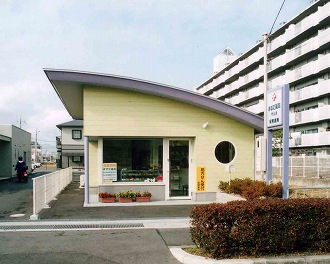 Ｍ薬局 滋賀県守山市 新築 物品販売店（調剤薬局） 商業施設（ブライダル） クラブモーリア クラシック 福岡県大牟田市 大規模な模様替え ＋ 増築 結婚式場＋チャペル 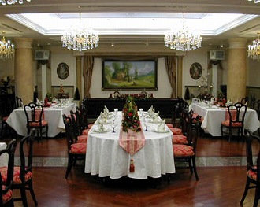 St.ラファエルカテドラル 熊本県熊本市 新築 チャペル＋バンケット マリアチャペル原町 福島県原町市 新築 チャペル＋バンケット 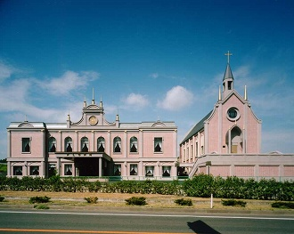 浪江フローラ 福島県浪江市 新築 結婚式場＋チャペル 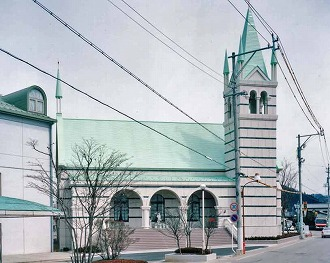 マリアチャペル高山 岐阜県高山市 新築 チャペル 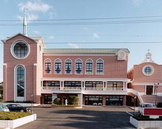 桜フローラ 宮城県大河原町 新築 結婚式場＋チャペル 商業施設（メモリアル） Ｓ社、ホール計画 広島県某所 新築計画 葬儀式場＋法事会館 Ｋ社、ホール計画 奈良県某所 改装計画 葬儀式場 館山会館 千葉県館山市 新築 葬儀式場 人吉会館 熊本県人吉市 新築 葬儀式場 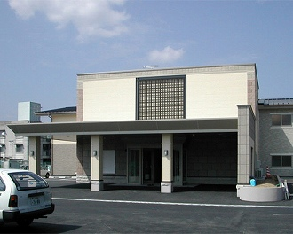 フェニックスホール日田 大分県日田市 用途変更 ＋ 増築 葬儀式場 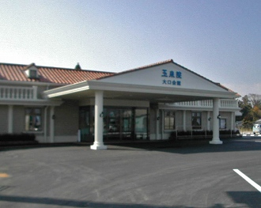 大口会館 鹿児島県大口市 新築 葬儀式場 メモリアルホール原町 福島県原町市 新築 葬儀式場 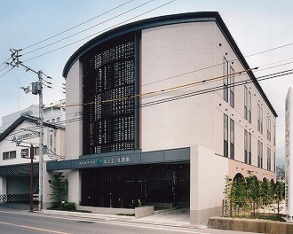 ルミエール西条 愛媛県西条市 新築 葬儀式場 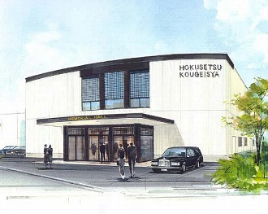 セレモニーホール北摂 大阪府豊能郡 新築 葬儀式場 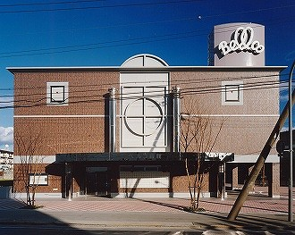 新伊丹ベルコ会館 兵庫県伊丹市 新築 葬儀式場 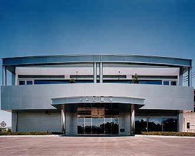 徳島玉鳳院 徳島県徳島市 新築 葬儀式場 その他 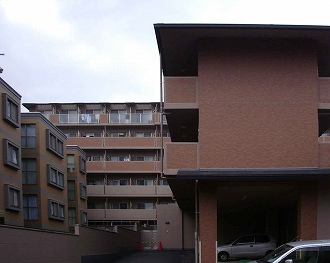 ドーミー桃山御陵寮 京都府京都市 新築 寄宿舎 ＴＧ社 新社屋 大阪府某所 新築 事務所 ＋ 倉庫 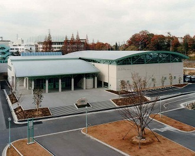 ＰＬ学園 総合体育館 大阪府富田林市 新築 体育館 ＋ 室内プール 掲載されている写真の無許可転載・転用を禁止します。